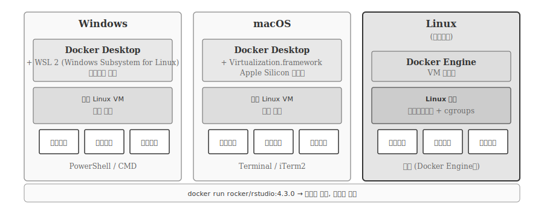
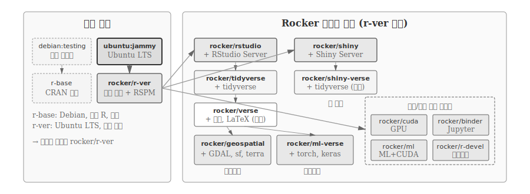
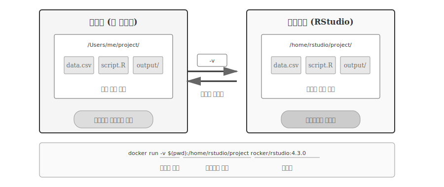

| 구분 | 도커 | 쿠버네티스 |
|---|---|---|
| 주 사용자 | 개발자, 데이터 과학자 | DevOps, 인프라 엔지니어 |
| 학습 곡선 | 몇 시간~며칠 | 몇 주~몇 달 |
| 시작 명령 | docker run | 클러스터 설정부터 |
| 운영 규모 | 1~10개 컨테이너 | 수십~수천 개 컨테이너 |
30 도커: 재현 환경
2023년 어느 연구팀의 이야기다. 논문 심사 과정에서 심사위원이 “분석 결과를 재현할 수 없습니다”라고 지적했다. 연구자는 당황했다. 6개월 전 자신의 컴퓨터에서는 완벽히 작동했기 때문이다. 코드와 데이터를 다시 실행했지만, 결과 그래프가 달랐다. 그 사이 R이 4.2에서 4.3으로 업그레이드되었고, ggplot2 패키지가 3.4에서 3.5로 바뀌면서 테마 기본값이 변경되었다. 맥OS도 Monterey에서 Sonoma로 업데이트되었다. 원본 환경을 복구하려 했지만, 구버전 R과 패키지를 다시 설치하는 과정에서 새로운 오류들이 발생했다. 결국 논문 게재는 6개월 지연되었다.
이것이 재현가능성 위기다. “내 컴퓨터에서는 되는데요”는 개발자가 가장 두려워하는 말이다. 동일한 코드, 동일한 데이터인데도 환경 차이로 결과가 달라진다. 의존성(dependency) 문제는 과학 연구의 신뢰성을 위협한다.
도커(Docker)는 이 문제를 근본적으로 해결한다. 분석 환경 전체를 “스냅샷”으로 저장한다. Ubuntu 20.04, R 4.3.0, ggplot2 3.4.2, 시스템 라이브러리, 데이터까지 모든 것을 하나의 컨테이너로 패키징한다. 이 컨테이너는 어디서나 동일하게 실행된다. 5년이 지나도, 다른 컴퓨터에서도, 클라우드 서버에서도 정확히 같은 결과를 재현한다.
30.1 가상화 기술의 진화
도커를 이해하려면 가상화 기술의 역사를 알아야 한다. 도커는 갑자기 등장한 기술이 아니라, 50년 가상화 역사의 최신 진화다.
가상화(Virtualization)는 “하나의 물리적 컴퓨터에서 여러 개의 독립적인 컴퓨터를 실행”하는 기술이다. 1960년대 IBM 메인프레임에서 시작해, 2000년대 VMware가 대중화했고, 2013년 도커가 혁명을 일으켰다.
1) 가상 머신 (VM) 시대 (1999-2010)
VMware, VirtualBox 같은 도구는 하드웨어 가상화를 제공한다. 윈도우 위에서 리눅스를 실행하거나, 맥OS 위에서 윈도우를 실행한다. 각 VM은 완전한 OS를 포함하므로 무겁고 느리다. Windows 10 VM 하나가 20GB 디스크를 차지하고, 4GB 메모리를 사용하며, 부팅에 30초가 걸린다. 노트북에서 3개의 VM을 동시에 실행하면 시스템이 느려진다.
2) 컨테이너 등장 (2008-2012)
리눅스 컨테이너(LXC)는 OS 수준 가상화를 제공한다. 하나의 리눅스 커널을 여러 컨테이너가 공유하므로 VM보다 훨씬 가볍다. 컨테이너 하나가 몇 MB에서 수백 MB이고, 부팅은 1초 이내다. 하지만 사용법이 복잡하고, 리눅스에서만 작동했다.
3) 도커 혁명 (2013-현재)
도커는 컨테이너를 누구나 쉽게 사용할 수 있게 만들었다. 간단한 명령어, 이미지 공유 플랫폼(Docker Hub), 크로스 플랫폼 지원(윈도우/맥OS/리눅스)으로 컨테이너 기술을 대중화했다. 2013년 Solomon Hykes가 PyCon에서 5분 데모를 선보인 후, 몇 년 만에 업계 표준이 되었다.

그림 30.1 은 가상화 기술의 50년 진화를 보여준다. 가상 머신(VM)은 완전한 OS를 포함해 무겁지만(20GB+, 4GB RAM) 완벽한 격리를 제공한다. 컨테이너는 OS 커널을 공유해 가볍지만(수십 MB, 실사용 메모리만) 리눅스에서만 작동했다. 도커는 컨테이너의 가벼움을 유지하면서도, Windows/macOS에서도 사용할 수 있게 만들었다. Docker Hub로 이미지를 공유하고, 간단한 명령어로 누구나 컨테이너를 사용하게 되었다.
노트도커 vs 쿠버네티스: 데이터 과학자 선택
그림 30.1 에서 보았듯이 도커(2013) 이후 쿠버네티스(2015)가 등장했다. 쿠버네티스가 더 최신 기술인데, 왜 데이터 과학은 도커에 초점을 맞추는가?
해결하는 문제가 다르다. 도커는 “환경을 패키징”하는 도구다. 쿠버네티스는 “수백 개 컨테이너를 자동으로 운영”하는 도구다. 넷플릭스가 수천 대 서버에서 마이크로서비스를 운영하거나, 구글이 트래픽 급증 시 자동으로 서버를 늘리는 상황에 필요하다.
데이터 과학자 대부분은 개인 또는 소규모 팀으로 작업한다. 탐색적 분석을 빠르게 실행하고 중지하며, 자동 스케일링보다는 “동일 환경 재현”이 핵심 목표다. 노트북에서 docker run 한 줄이면 작업을 시작할 수 있다. 반면 쿠버네티스는 Shiny 앱 동시 접속자가 수천 명에 달하거나, ML API가 초당 수만 건 요청을 처리해야 하거나, 24시간 무중단 서비스가 필요한 상황에 적합하다. 대부분의 데이터 과학자에게 쿠버네티스는 “알면 좋지만 당장 필요하지 않은” 기술이다. 도커만으로 재현가능성, 이식성, 공유성 문제를 충분히 해결할 수 있다.
30.2 이미지와 컨테이너
도커를 처음 접하면 “이미지”와 “컨테이너”라는 용어가 혼란스럽다. 둘 다 “가상 환경”처럼 들리지만, 역할이 완전히 다르다. 이미지(Image)는 컴퓨팅 환경 “설계도”다. 프로그래밍 클래스(Class)처럼 “무엇을 포함할지” 정의한 템플릿이다. 컨테이너(Container)는 설계도로 만든 “실제 작동하는 컴퓨팅 환경”이다. 클래스에서 new로 인스턴스를 생성하듯, 이미지에서 docker run으로 컨테이너를 생성한다. 하나의 이미지에서 여러 컨테이너를 만들 수 있고, 각 컨테이너는 독립적으로 실행/중지/삭제할 수 있다.

그림 30.2 는 이미지와 컨테이너의 관계를 보여준다. 왼쪽의 rocker/rstudio:4.3.0 이미지 하나에서 오른쪽의 여러 컨테이너가 생성된다. 각 컨테이너는 독립적으로 실행되며, 서로 다른 포트(8787, 8788, 8789)에서 접속할 수 있다. 프로그래밍의 Class와 Instance 관계와 동일하다.
도커 이미지는 가상 컴퓨터의 “설계도”다. Ubuntu 20.04, R 4.3.0, tidyverse 패키지, 데이터 파일이 포함된 완전한 환경 스냅샷이다. 이미지는 읽기 전용(read-only)이며, 파일로 저장되고 공유된다. Docker Hub에서 전 세계 개발자가 만든 이미지를 다운로드하거나, 자신의 이미지를 업로드해 공유한다.
도커 컨테이너는 이미지를 “실행한 것”이다. 이미지가 “프로그램 파일”이라면, 컨테이너는 “실행 중인 프로세스”다. 하나의 이미지에서 여러 컨테이너를 동시에 실행할 수 있다. 예를 들어, rocker/rstudio 이미지 하나로 3개의 RStudio 컨테이너를 각각 다른 포트에서 실행할 수 있다.
힌트데이터 과학 도커 핵심 가치
1. 재현성: 논문, 보고서, 분석 결과를 도커 이미지와 함께 제공하면, 누구나 정확히 동일한 환경에서 결과를 재현할 수 있다. 5년 후에도, 다른 컴퓨터에서도 같은 결과가 나온다.
2. 이식성: 로컬 컴퓨터에서 개발한 환경을 GPU 서버로, AWS/GCP 클라우드로, 동료 컴퓨터로 그대로 이동한다. “로컬에서는 되는데 서버에서는 안 돼요” 문제가 사라진다.
3. 공유성: 팀원에게 코드와 README만 주면 환경 설정에 반나절이 걸린다. 도커 이미지를 주면 docker run 명령 하나로 5분 안에 작업을 시작한다.
30.3 도커의 작동 원리
도커가 “컴퓨터 안의 컴퓨터”를 만드는 방식은 가상 머신(VM)과 근본적으로 다르다. VM은 하드웨어를 가상화해 완전한 운영체제를 실행하지만, 도커 컨테이너는 호스트의 리눅스 커널을 공유하면서 네임스페이스로 프로세스를 격리하고 cgroups로 자원을 제한한다. 커널을 공유하기 때문에 VM처럼 수십 GB의 디스크와 수 GB의 메모리가 필요하지 않다. 컨테이너는 수십 MB에서 수백 MB로 가볍고, 부팅 시간도 1초 이내다.

그림 30.3 는 컨테이너가 호스트 커널 위에서 작동하는 방식을 보여준다. 컨테이너 A와 B는 각각 독립된 네임스페이스를 갖지만, 맨 아래 리눅스 커널은 공유한다. 이미지 레이어도 공유된다. 두 컨테이너가 같은 Ubuntu 베이스 이미지를 사용하면, 해당 레이어는 디스크에 한 번만 저장된다. cgroups는 각 컨테이너가 사용할 수 있는 CPU와 메모리를 제한해 한 컨테이너가 시스템 자원을 독점하지 못하게 한다.
도커 이미지는 레이어(layer) 구조로 이루어진다. 마치 투명 필름을 겹치듯 Ubuntu 레이어 위에 R 설치 레이어가 올라가고, 그 위에 tidyverse 레이어가 쌓인다. 각 레이어는 읽기 전용이며, 컨테이너가 실행될 때 맨 위에 쓰기 가능한 얇은 레이어가 추가된다. 컨테이너 안에서 파일을 수정하면 쓰기 레이어에만 기록되고, 원본 이미지는 변경되지 않는다. 레이어 구조의 장점은 캐싱에 있다. Dockerfile에서 코드 파일만 수정했다면 OS와 패키지 레이어는 그대로 재사용되어 빌드 시간이 몇 분에서 몇 초로 단축된다. 여러 이미지가 같은 베이스 레이어를 공유하면 디스크 공간도 절약된다.
네임스페이스(namespace)는 컨테이너가 마치 독립된 시스템처럼 보이게 하는 리눅스 커널 기능이다. PID 네임스페이스 덕분에 컨테이너 내부에서는 프로세스 ID가 1번부터 시작하고, 다른 컨테이너의 프로세스는 보이지 않는다. NET 네임스페이스는 각 컨테이너에 독립된 네트워크 인터페이스를 제공해 IP 주소와 포트가 충돌하지 않게 한다. MNT 네임스페이스는 파일시스템을 격리해 컨테이너가 호스트의 다른 파일에 접근하지 못하게 한다. cgroups(control groups)는 자원 할당을 제어한다. docker run --cpus=2 --memory=4g 명령으로 컨테이너가 최대 2개 CPU 코어와 4GB 메모리만 사용하도록 제한할 수 있다. 한 컨테이너에서 무한 루프가 돌거나 메모리 누수가 발생해도 다른 컨테이너와 호스트 시스템은 영향받지 않는다.
30.4 Docker Desktop
도커 데스크톱(Docker Desktop)은 Windows와 macOS 사용자가 도커를 경험하는 첫 관문이다. 도커 컨테이너는 리눅스 커널의 네임스페이스와 cgroups 기술을 기반으로 작동하기 때문에, 리눅스가 아닌 운영체제에서는 직접 실행할 수 없다. Docker Desktop은 내부적으로 경량 리눅스 가상 머신을 실행하고 그 위에서 컨테이너를 구동함으로써 이 문제를 해결한다.

그림 30.4 은 세 가지 운영체제에서 도커가 작동하는 방식을 보여준다. Windows에서는 WSL 2(Windows Subsystem for Linux 2)와 통합되어 네이티브에 가까운 성능을 제공하고, macOS에서는 Apple Silicon의 Virtualization.framework를 활용한다. 두 환경 모두 사용자가 내부 구조를 의식할 필요 없이 터미널에서 docker run 명령만 실행하면 된다. 리눅스에서는 VM 없이 Docker Engine만 설치해 커널과 직접 통신하므로 가장 효율적이다.

그림 30.5 는 Docker Desktop 앱의 실제 화면을 보여준다. 왼쪽 사이드바에서 Containers, Images, Volumes 메뉴를 선택하고, 중앙 영역에서 각 컨테이너의 실행 상태, 사용 중인 이미지, 포트 매핑을 한눈에 확인할 수 있다. 녹색 원은 실행 중인 컨테이너, 회색 원은 종료된 컨테이너를 나타낸다. 오른쪽 버튼으로 컨테이너를 시작하거나 중지할 수 있어, 명령어를 외우지 않아도 마우스 클릭만으로 컨테이너를 관리할 수 있다. Docker Compose, Kubernetes(선택) 등 도커 생태계의 핵심 도구도 함께 설치된다.
# Docker Desktop 설치 후 터미널에서 확인
docker --version
# Docker version 24.0.7, build afdd53b
# 첫 번째 컨테이너 실행 테스트
docker run hello-world라이선스 정책은 사용 규모에 따라 달라진다. 개인 사용자, 교육 목적, 소규모 기업(직원 250명 미만, 연매출 1,000만 달러 미만)은 무료로 사용할 수 있고, 대기업 환경에서만 유료 구독이 필요하다. 리눅스 서버에서는 Docker Desktop 없이 Docker Engine만 설치하면 되므로 프로덕션 환경에서 라이선스 비용은 발생하지 않는다.
30.5 Docker Hub
GitHub이 소스 코드를 저장하고 공유하는 플랫폼이라면, 도커 허브(Docker Hub)는 도커 이미지를 저장하고 공유하는 플랫폼이다. 개발자가 GitHub에서 git clone으로 코드를 받듯, Docker Hub에서 docker pull로 이미지를 받는다. 프로젝트의 완전한 재현을 위해서는 코드(GitHub)와 실행 환경(Docker Hub) 둘 다 필요하다.

그림 30.6 는 Docker Hub의 구조를 보여준다. 로컬에서 빌드한 이미지를 docker push로 업로드하면, 서버나 동료가 docker pull로 동일한 이미지를 다운로드한다. Docker Hub에는 rocker/rstudio, python, postgres 같은 공식 이미지와 사용자가 만든 커스텀 이미지가 함께 존재한다.
버전 태그 시스템은 재현가능성의 핵심이다. rocker/rstudio:4.3.0처럼 특정 버전을 명시하면 5년 후에도 동일한 환경을 보장받는다. 반면 latest 태그는 최신 버전을 가리키므로 시간이 지나면 내용이 바뀔 수 있다. 재현성이 중요한 프로젝트에서는 반드시 특정 버전 태그를 사용해야 한다.
# Docker Hub에서 이미지 다운로드
docker pull rocker/rstudio:4.3.0
# 내 이미지를 Docker Hub에 업로드
docker push myname/myimage:1.030.6 Rocker 프로젝트
R 환경 설정은 악명 높다. 운영체제마다 다른 설치 방법, 시스템 라이브러리 의존성, 패키지 버전 충돌까지 초보자는 물론 숙련된 개발자도 시간을 허비한다. 특히 sf, terra 같은 지리공간 패키지나 rJava 같은 시스템 의존 패키지는 설치 자체가 하루 일과가 되기도 한다.
Rocker 프로젝트는 이 문제를 해결하기 위해 2014년 Carl Boettiger와 Dirk Eddelbuettel이 시작했다. R 커뮤니티를 위한 공식 도커 이미지를 제공하며, Docker Hub에서 가장 많이 다운로드되는 R 이미지 시리즈다. docker pull rocker/rstudio 한 줄이면 RStudio가 포함된 완전한 R 개발 환경이 준비된다. 시스템 라이브러리 설치, 의존성 해결, 버전 충돌 걱정 없이 바로 분석을 시작할 수 있다.

그림 30.7 는 Rocker 이미지 계층 구조를 보여준다. 가장 기본이 되는 rocker/r-ver는 Ubuntu LTS와 R만 포함한 최소 이미지로, R 스크립트 실행에 적합하다. 여기에 RStudio Server를 추가한 rocker/rstudio는 웹 브라우저에서 8787 포트로 접속하는 IDE 환경을 제공한다. 반면 rocker/shiny는 Shiny Server를 포함해 3838 포트에서 앱을 배포한다.
데이터 분석 작업에는 rocker/tidyverse가 적합하다. tidyverse와 devtools가 사전 설치되어 패키지 설치 시간을 절약한다. 논문이나 보고서 출판이 필요하다면 rocker/verse를 선택한다. Quarto, LaTeX, 폰트가 모두 포함되어 PDF 출력까지 한 번에 해결한다. 머신러닝 작업에는 rocker/ml, 지리공간 분석에는 rocker/geospatial처럼 특화된 이미지도 제공된다.
모든 Rocker 이미지는 R 버전별 태그를 지원한다. rocker/tidyverse:4.5.0은 R 4.5.0 환경을, rocker/tidyverse:4.3.0은 R 4.3.0 환경을 제공한다. 버전을 명시하지 않으면 latest 태그가 적용되어 최신 버전이 설치된다. 재현성이 중요한 프로젝트에서는 반드시 특정 버전 태그를 사용해야 한다.
30.7 Dockerfile
Rocker 이미지는 훌륭한 출발점이지만, 실제 프로젝트에서는 추가 패키지나 설정이 필요하다. Dockerfile은 이미지를 만드는 “레시피”다. 어떤 베이스 이미지에서 시작할지, 어떤 패키지를 설치할지, 어떤 파일을 복사할지 순서대로 기술한다. 요리 레시피처럼 누구나 같은 Dockerfile로 동일한 이미지를 빌드할 수 있다.

그림 30.8 는 Dockerfile에서 커스텀 이미지가 만들어지는 과정을 보여준다. Dockerfile의 각 명령어가 하나의 레이어로 변환되고, 레이어들이 쌓여 최종 이미지가 완성된다. 레이어는 캐시되므로, 코드만 수정했다면 OS와 패키지 레이어는 재사용되어 빌드 시간이 단축된다.
Dockerfile의 핵심 명령어는 다섯 가지다. FROM은 베이스 이미지를 지정한다. RUN은 셸 명령어를 실행해 패키지를 설치하거나 설정을 변경한다. COPY는 로컬 파일을 이미지 안으로 복사한다. WORKDIR은 작업 디렉토리를 설정하고, CMD는 컨테이너 시작 시 실행할 기본 명령을 정의한다.
# Dockerfile 예시: 데이터 분석 환경
FROM rocker/rstudio:4.3.0
# 시스템 라이브러리 설치 (sf, terra 패키지용)
RUN apt-get update && apt-get install -y \
libgdal-dev \
libgeos-dev \
libproj-dev \
&& rm -rf /var/lib/apt/lists/*
# R 패키지 설치
RUN R -e "install.packages(c('tidyverse', 'sf', 'terra', 'gt'), repos='https://cloud.r-project.org/')"
# 프로젝트 파일 복사
COPY . /home/rstudio/project
# 작업 디렉토리 설정
WORKDIR /home/rstudio/project
# RStudio 포트 노출
EXPOSE 8787이미지를 빌드하려면 Dockerfile이 있는 디렉토리에서 docker build 명령을 실행한다. -t 옵션으로 이미지 이름과 태그를 지정한다.
# 이미지 빌드
docker build -t myproject:1.0 .
# 빌드한 이미지 확인
docker images
# 컨테이너 실행
docker run -d -p 8787:8787 -e PASSWORD=rstudio myproject:1.0
# 브라우저에서 localhost:8787 접속포트 매핑(-p)은 컨테이너 내부 포트를 호스트에 노출한다. -p 8787:8787에서 콜론 왼쪽은 호스트 포트, 오른쪽은 컨테이너 포트다. RStudio Server가 컨테이너 내부에서 8787 포트로 실행되고, 이를 호스트의 8787 포트에 연결한다. 호스트 포트를 8888로 바꾸면(-p 8888:8787) 브라우저에서 localhost:8888로 접속한다. 환경 변수(-e)는 컨테이너 실행 시 설정값을 전달한다. Rocker 이미지에서 -e PASSWORD=rstudio는 RStudio 로그인 비밀번호를 지정한다. -e DISABLE_AUTH=true로 인증을 끄거나, -e ROOT=true로 sudo 권한을 부여하는 것도 가능하다.
Dockerfile을 Git으로 버전 관리하면 환경 설정 변경 이력이 남는다. 코드와 함께 Dockerfile을 공유하면 동료는 docker build 한 줄로 동일한 개발 환경을 구축한다. 6개월 후 논문 심사위원이 재현을 요청해도, Dockerfile과 코드만 있으면 정확히 같은 환경에서 분석을 실행할 수 있다.
30.8 데이터와 볼륨
컨테이너는 격리된 환경이라는 장점이 있지만, 이 격리가 데이터 처리에서는 문제가 된다. 컨테이너 내부에서 생성한 파일은 컨테이너를 삭제하면 함께 사라진다. 밤새 돌린 분석 결과가 docker rm 한 줄로 증발하는 것이다. 데이터 과학자에게 이보다 끔찍한 시나리오는 없다.
볼륨(Volume)과 바인드 마운트(Bind Mount)는 이 문제를 해결한다. 호스트 시스템의 폴더를 컨테이너 내부에 “연결”하면, 컨테이너에서 생성한 파일이 호스트에 직접 저장된다. 컨테이너가 삭제되어도 데이터는 호스트에 그대로 남는다. 반대로 호스트의 데이터 파일을 컨테이너에서 불러와 분석하는 것도 가능하다.

그림 30.9 는 호스트와 컨테이너 간 데이터 흐름을 보여준다. -v 옵션으로 호스트 경로와 컨테이너 경로를 연결하면, 양쪽에서 동일한 파일에 접근할 수 있다. 바인드 마운트는 호스트의 특정 폴더를 직접 연결하고, 네임드 볼륨은 도커가 관리하는 저장소를 사용한다. 읽기 전용(:ro) 옵션은 원본 데이터를 실수로 덮어쓰는 것을 방지한다.
# 바인드 마운트: 호스트 폴더를 컨테이너에 연결
docker run -d -p 8787:8787 \
-v /Users/me/project:/home/rstudio/project \
-e PASSWORD=rstudio \
rocker/rstudio:4.3.0
# 컨테이너 내부에서 /home/rstudio/project 접근 가능
# 분석 결과를 이 경로에 저장하면 호스트에도 저장됨데이터 분석 워크플로우에서는 프로젝트 폴더 전체를 마운트하는 것이 일반적이다. data/ 폴더에 원본 데이터를 두고, scripts/ 폴더에 분석 코드를, output/ 폴더에 결과물을 저장한다. 컨테이너 안에서 RStudio로 작업하면 모든 변경사항이 호스트에 실시간으로 반영된다. Git으로 버전 관리도 가능하고, 컨테이너를 삭제했다가 다시 만들어도 데이터는 그대로다.
# 실전 예시: 현재 디렉토리를 프로젝트 폴더로 마운트
docker run -d -p 8787:8787 \
-v $(pwd):/home/rstudio/project \
-e PASSWORD=rstudio \
rocker/tidyverse:4.3.0
# $(pwd): 현재 작업 디렉토리
# 프로젝트 내 data/, scripts/, output/ 폴더 모두 접근 가능대용량 데이터를 다룰 때는 네임드 볼륨이 유용하다. docker volume create 명령으로 볼륨을 생성하면 도커가 최적화된 저장소를 관리한다. 여러 컨테이너가 같은 볼륨을 공유할 수도 있어, R 컨테이너에서 전처리한 데이터를 Python 컨테이너에서 분석하는 파이프라인도 구성할 수 있다.
# 네임드 볼륨 생성
docker volume create analysis_data
# R 컨테이너에서 데이터 전처리
docker run -v analysis_data:/data rocker/tidyverse:4.3.0 \
Rscript -e "saveRDS(mtcars, '/data/processed.rds')"
# Python 컨테이너에서 동일 데이터 접근
docker run -v analysis_data:/data python:3.11 \
python -c "import pyreadr; df = pyreadr.read_r('/data/processed.rds')"볼륨을 사용할 때 한 가지 주의할 점은 파일 권한이다. 컨테이너 내부 사용자(보통 rstudio 또는 root)와 호스트 사용자의 UID가 다르면 권한 문제가 발생할 수 있다. Rocker 이미지는 이 문제를 대부분 자동 처리하지만, 권한 오류가 발생하면 --user 옵션으로 UID를 맞추거나 호스트에서 폴더 권한을 조정해야 한다.
30.9 도커 vs 다른 격리 도구
환경 격리 도구는 크게 세 가지 계층으로 나뉜다. 가장 가벼운 것은 패키지 수준 격리다. Python의 uv나 R의 renv가 여기에 해당한다. 프로젝트별로 패키지 버전을 고정하고, requirements.txt나 renv.lock 파일로 의존성을 기록한다. 설정이 간단하고 빠르지만, 시스템 라이브러리나 OS에 의존하는 패키지는 여전히 문제가 된다. sf 패키지가 GDAL 버전에 따라 다르게 동작하거나, macOS와 Linux에서 결과가 달라지는 상황은 패키지 격리만으로 해결할 수 없다.
한 단계 위가 런타임 수준 격리다. pyenv나 rig 같은 도구로 Python이나 R 버전 자체를 프로젝트별로 전환한다. 패키지뿐 아니라 언어 런타임까지 격리되므로 R 4.2와 R 4.3을 오가며 작업할 수 있다. 하지만 여전히 시스템 라이브러리에는 손을 대지 못한다. Ubuntu에서 만든 코드가 macOS에서 실패하는 문제는 그대로다.
OS 수준 격리가 도커의 영역이다. 운영체제, 시스템 라이브러리, 런타임, 패키지를 모두 포함한 완전한 환경을 패키징한다. Ubuntu 20.04 + GDAL 3.4 + R 4.3.0 + sf 1.0 조합을 그대로 보존하고 어디서든 재현한다. 초기 학습 곡선이 있지만, 한 번 익히면 환경 문제로 고생할 일이 사라진다.
어떤 도구를 선택할지는 상황에 따라 다르다. 순수 R/Python 패키지만 사용하는 로컬 분석이라면 renv나 uv로 충분하다. 하지만 GDAL, PostgreSQL, OpenCV 같은 시스템 라이브러리에 의존하거나, R과 Python을 함께 사용하거나, Shiny 앱이나 API를 프로덕션에 배포하거나, 5년 후에도 재현을 보장해야 한다면 도커가 답이다. 일반적인 경로는 renv/uv로 시작해 시스템 의존성이나 배포 요구가 생기면 도커로 전환하는 것이다.
💡 생각해볼 점
도커가 필요한 순간은 명확하다. 팀원이 “환경 설정이 안 돼요”라고 할 때, Shiny 앱을 서버에 배포할 때, 1년 전 분석을 재현해야 할 때, OpenCV나 GDAL 같은 시스템 라이브러리가 필요할 때, 논문 제출 시 재현성을 증명해야 할 때다. 이런 상황이 오면 도커를 시작하자.
이미지와 컨테이너 구분은 도커 이해의 핵심이다. 이미지는 설계도(Class)이고, 컨테이너는 실행 인스턴스(Object)다. docker pull로 이미지를 받고, docker run으로 컨테이너를 실행한다. 하나의 이미지에서 여러 컨테이너를 만들 수 있고, 컨테이너를 삭제해도 이미지는 남는다. Rocker 이미지(rocker/rstudio, rocker/tidyverse, rocker/verse)는 R 사용자의 출발점이다. 버전 태그(:4.3.0)를 명시하면 5년 후에도 동일한 환경을 보장받는다.
볼륨(-v)은 데이터 영속성의 열쇠다. 컨테이너는 삭제되면 내부 데이터도 사라지지만, 호스트 폴더를 마운트하면 분석 결과가 호스트에 남는다. 밤새 돌린 분석이 docker rm 한 줄로 증발하는 비극을 막으려면 반드시 볼륨을 사용해야 한다.
도커 학습 곡선은 가파르다. 하지만 한 번 익히면 환경 문제로 고생하는 시간이 사라진다. “내 컴퓨터에서는 되는데”라는 말을 더 이상 하지 않게 된다. 다음 장에서는 이론을 넘어 실전으로 들어간다. Docker Desktop 설치, rocker/rstudio 실행, Dockerfile 작성, 이미지 빌드까지 전 과정을 직접 수행한다. 첫 번째 컨테이너를 만들고, 웹브라우저에서 localhost:8787을 열어 RStudio가 뜨는 것을 확인하면, 도커의 가치를 체감하게 된다.